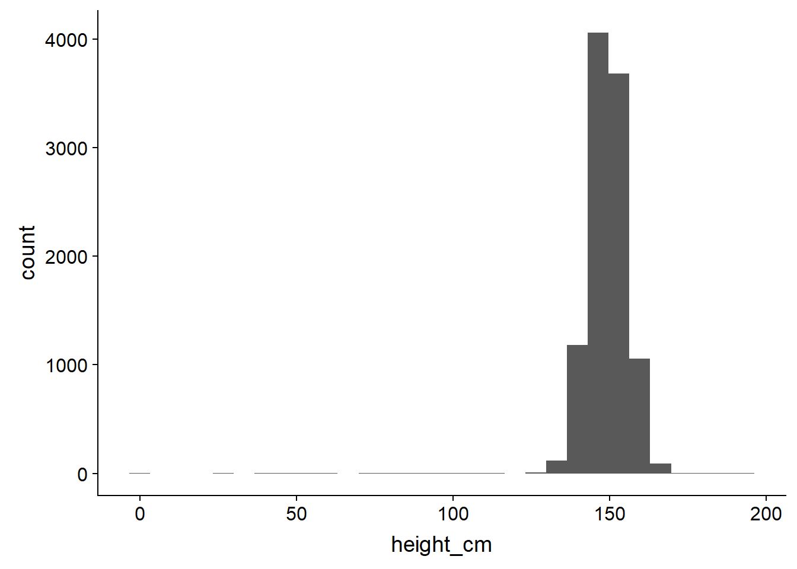
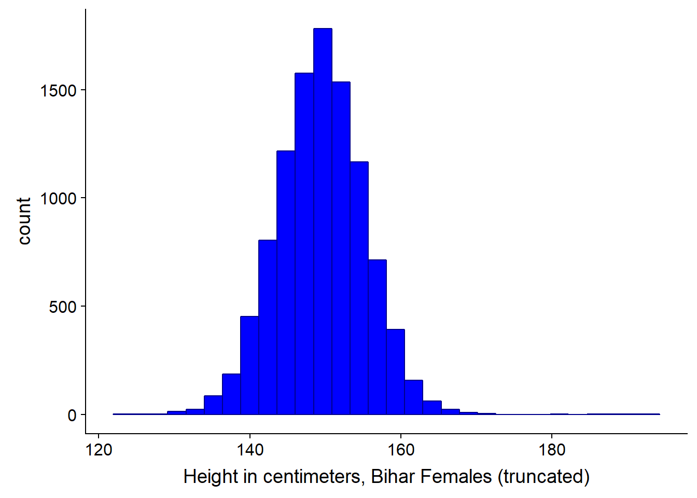

Chapter 3 Module 3: Describing Data, Joint and Conditional Distributions of Random Variables
Module Sections:
- Summarizing and Describing Data
- Joint, Marginal, and Conditional Distributions
- R Tutorials: Basic Functions
- Module 3: Homework
Module Content:
3.1 Summarizing and Describing Data
The goal of visualisation is either EDA for yourself or for conveying a message to other people. The course uses ggplot in both instances, this module focuses more on EDA for yourself.
One common way of initially looking at the data is to use a histogram, which provides a rough estimate of the probability distribution function (PDF) of a continous variable. We can have right open or closed sets when creating histogram bins \([a_i,b_i), [a_{i+1},b_{i+1})\) see this video for a discussion on binning.
library(ggplot2)
require(cowplot)## Loading required package: cowplot##
## Attaching package: 'cowplot'## The following object is masked from 'package:ggplot2':
##
## ggsavelibrary(tidyverse)## -- Attaching packages ------------------ tidyverse 1.2.1 --## v tibble 1.4.2 v purrr 0.2.5
## v tidyr 0.8.1 v dplyr 0.7.6
## v readr 1.1.1 v stringr 1.3.1
## v tibble 1.4.2 v forcats 0.3.0## -- Conflicts --------------------- tidyverse_conflicts() --
## x dplyr::filter() masks stats::filter()
## x cowplot::ggsave() masks ggplot2::ggsave()
## x dplyr::lag() masks stats::lag()bihar_data <- read_csv("./files/M3/Bihar.csv")## Parsed with column specification:
## cols(
## personid = col_integer(),
## female = col_integer(),
## adult = col_integer(),
## age = col_double(),
## height_cm = col_double(),
## weight_kg = col_double()
## )# keep the females
bihar_adult_females <- dplyr::filter(bihar_data, adult == 1, female == 1)
# take a look at our data
head(bihar_adult_females, 10)## # A tibble: 10 x 6
## personid female adult age height_cm weight_kg
## <int> <int> <int> <dbl> <dbl> <dbl>
## 1 11010103 1 1 28 150. 37.7
## 2 11010202 1 1 30 140. 57.3
## 3 11010207 1 1 35 148. 38.9
## 4 11010302 1 1 48 145. 35.7
## 5 11010303 1 1 22 NA NA
## 6 11010306 1 1 18 NA NA
## 7 11010308 1 1 28 145. 42.4
## 8 11010402 1 1 58 156. 51.1
## 9 11010404 1 1 36 156. 50.7
## 10 11010407 1 1 55 156. 47.2# plot it
ggplot(bihar_adult_females, aes(height_cm)) +
geom_histogram()## `stat_bin()` using `bins = 30`. Pick better value with `binwidth`.## Warning: Removed 1432 rows containing non-finite values (stat_bin).
# not very attractive, so lets tidy it up - there are some outliers close to 0 and 200 cm
bihar_adult_females_trunc <- dplyr::filter(bihar_adult_females, height_cm > 120, height_cm < 200)
# Plot again with colour and labels
ggplot(bihar_adult_females_trunc, aes(height_cm)) +
geom_histogram(fill = "blue", color = "darkblue") +
xlab("Height in centimeters, Bihar Females (truncated)")## `stat_bin()` using `bins = 30`. Pick better value with `binwidth`.